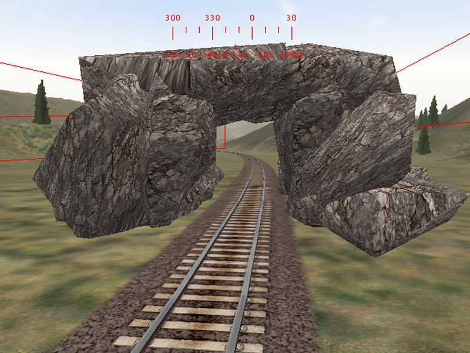
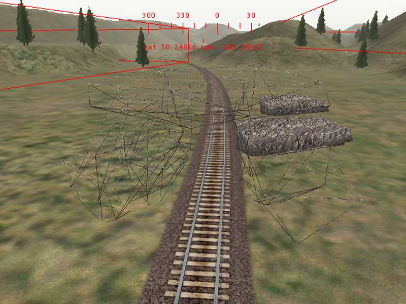
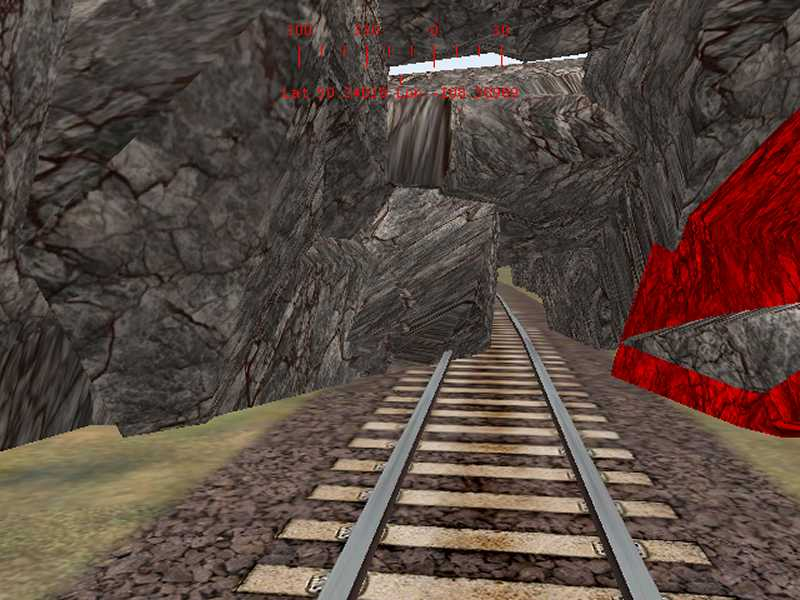
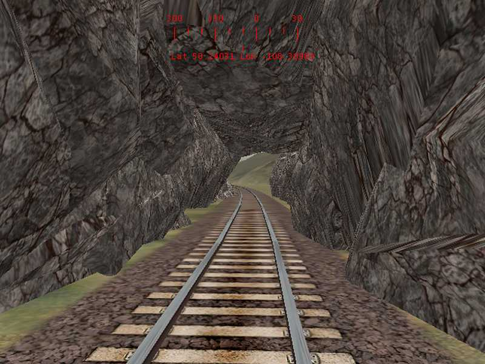
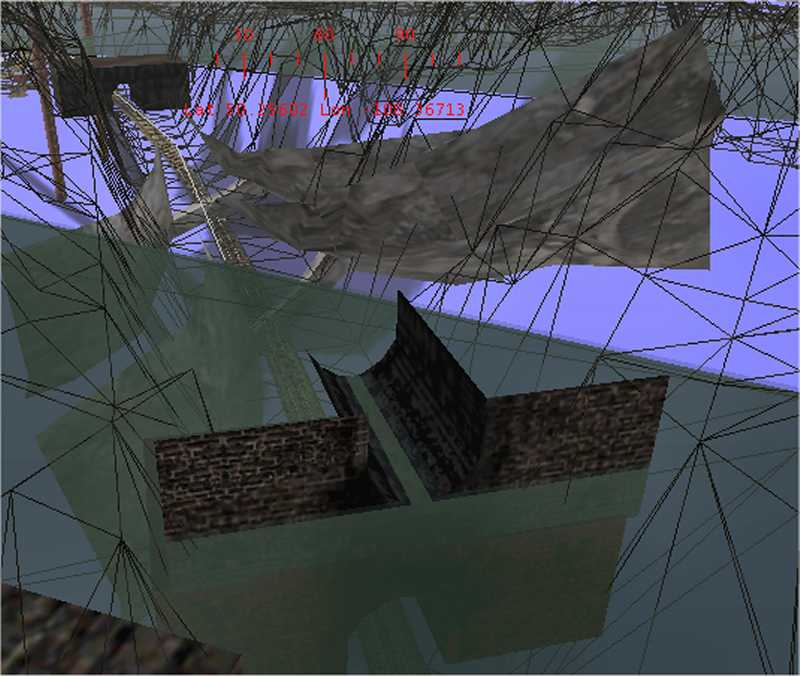
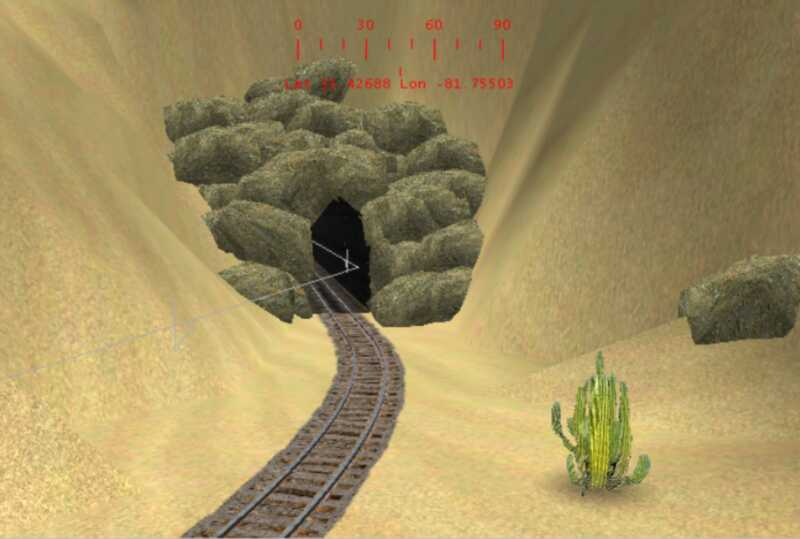

Tunnel Walls with a Rock Face
by Jim "sniper297" Ward
Calr was asking about making tunnel walls with a raw rock face: the only way I can think of doing that would be to use TGAtool2 to hack atracktunwall.ace for a rock texture. Problem with that, even if you could get it to tile properly, you'd be stuck with rockface tunnels on the entire route.
One of the tunnel entrance objects with a different texture would probably work better.
Just for fun I decided to play with Ron Spalding's boulders (you'll find that in train-sim.com's file library under Scenery Objects, bld-pk1.zip thru bld-pk5.zip) to see if it was possible to make a tunnel. I only fooled around with it for a few minutes, and this is what I got.

First thing was placing a bunch of boulders, rotating and moving around to make a "tunnel". The boulders are textured on all sides, so they can be rotated with the flattest side toward the inside.

Using multiple select (hold down CTRL key and clicking on each object in turn), then hitting CTRL C (copy), I then hit CTRL V (paste) to paste a bunch of my homemade "tunnel" sections along the track.

Oops, shoulda positioned each group after pasting, before deselecting.

Well, anyway, after a little cleanup I had a rock tunnel. If the terrain is now raised to cover the rocks, it would be necessary to put something underneath the tracks too, to block out the white light of "the underside of the world". More rocks could be used, or something like the UKtunnel buried underground so the roof of the tunnels entrance sections would be the floor. Obviously you'd have to watch the object count when doing something like this, and there are probably other objects that would work better. One I used for PO&N's coal mine was the OEfootbridge object turned upside down.

Here is one of the tunnel entrances in Sea View 2 that uses Ron Spalding's rocks. The entire tunnel is not rocks, just the entrance. The signs inside that tunnel aren't transfers, they are simply billboards carefully placed against the inside tunnel wall. You have to drive through it to appreciate it.
